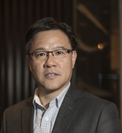
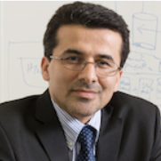

EVENT 3 - Overall Topic (August 24, 2020) 10AM-12PM Eastern Time (USA and Canada) 4PM-6PM Germany Time Zoom Meeting Link
Please email hosts for meeting password:
Yiran Chen or
Tsung-Yi Ho
For more meeting information:
DAWN_Attendance_Guidance.pdf
The capacity of Zoom meeting room is 300. Please be on time!
Brandon Wang is a Vice President at Synopsys, overseeing growth strategy for EDA products, including M&A, business and academic partnerships and other strategic initiatives. Prior to that, he served various senior management roles at Cadence and Arm in chief strategy office, marketing, solution engineering and R&D. An Electrical and Computer Engineer by training, Brandon holds 10 patents, and has published at 20+ IEEE conferences, in journal papers and invited talks; He also has an MBA degree from the Wharton School at the University of Pennsylvania.

Talk 2
topic 2
topic 2 description
Qu, Gang
ECE, Univ. of Maryland
Gang Qu received his M.S. and Ph.D. degrees in Computer Science from UCLA in 1998 and 2000, respectively. Previously, he had studied Mathematics in the University of Science and Technology of China (USTC) and the University of Oklahoma. He joined the Department of Electrical and Computer Engineering at the University of Maryland in 2000. He holds a joint appointment with the Institute for Systems Research. He is a joint associate professor at UMIACS and an affiliate associate professor at the Computer Science Department. Dr. Qu is a member of IEEE and ACM. He is also an individual member of the Virtual Socket Interface (VSI) Alliance. He has served the technical program committee for many conferences and is currently the general co-chair for the 16th ACM Great Lakes Symposium on VLSI (GLSVLSI 2006). He has published more than 60 journal and conference papers in these areas and co-authored the first book in VLSI Design intellectual property protection. He has won the ACM SIGMOBILE MobiCom best student paper award in 2001.
Talk 3
Topic 3
topic 3 description
Mark M. Tehranipoor
ECE, Univ. of Florid
Mark M. Tehranipoor is currently the Intel Charles E. Young Preeminence Endowed Chair Professor in Cybersecurity at the Department of Electrical and Computer Engineering, the University of Florida. He is also currently serving as the Program Director of Cybersecurity in the Herbert Wertheim College of Engineering, Director for Florida Institute for Cybersecurity (FICS) Research, Director for Edaptive Computing Inc. Transition Center (ECI-TC), Co-director for the AFOSR/AFRL Center of Excellence on Enabling Cyber Defense in Analog and Mixed Signal Domain (CYAN), and Co-Director for the National Microelectronic Security Training Center (MEST). He also served as the Associate Chair for Research and Strategic Initiatives for the ECE Department from 2017-2019. His current research projects include: hardware security and trust, electronics supply chain security, IoT security, and reliable and testable VLSI design. Prof. Tehranipoor has published over 500 journal articles and refereed conference papers and has delivered more than 200 invited talks and keynote addresses. In addition, he has 8 patents, and has published 11 books of which two are textbooks, as well as 28 book chapters. His projects are sponsored by both the industry and the Government.

Talk 4
Topic 4
topic 4 description
Ahmad-Reza Sadeghi
TU Darmstadt
Ahmad-Reza Sadeghi is a full Professor of Computer Science at the Technische Universität Darmstadt, in Germany, where he heads the System Security Lab. Since Oktober 2017 he is also the Director of Intel Collaborative Autonomous and Resilient Systems (ICRI-CARS) at TU Darmstadt. He is a member of the profile area CYSEC of TU Darmstadt. He received his PhD in Computer Science with the focus on privacy protecting cryptographic protocols and systems from the University of Saarland in Saarbrücken, Germany. Prior to academia, he worked in Research and Development of Telecommunications enterprises, amongst others Ericson Telecommunications. He has been leading and involved in a variety of national and international research and development projects on design and implementation of Trustworthy Computing Platforms and Trusted Computing, Security Hardware, and Applied Cryptography. He has been serving as general or program chair as well as program committee member of major conferences and workshops in Information Security and Privacy.